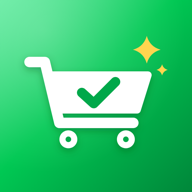

SnapCartPrivacy policy
Last updated: November 18, 2026
SnapCart ("the app") is a grocery list app. This policy explains what information the app collects and how it is used. "We" means the SnapCart developer, who you can reach at rupeshghimire8@gmail.com.
Information we collect
- Account information: your email address and a password. The password is stored only as a secure hash by our authentication provider; we cannot see it.
- Your name (optional): a name you choose under Account → Your name, shown to people you share a list with.
- Your lists: list names, the items you add (with any quantity, note and store category), whether they are marked as bought, and who added or bought each item.
- Suggestion history: the names of items you have added before and how often, used for suggestions and "Buy again". You can clear it under Account → Clear suggestion history.
- Photos of lists: when you add items from a photo, the text is read on your device by Google ML Kit, which is built into the app. The photo is not uploaded, and the app deletes its copy as soon as the text has been read. Only the items you choose to add are saved.
- Voice: when you add items by voice, the app opens your phone's speech service (for example Google's) and receives only the text of what you said. It never receives or keeps any audio. Whether the speech service processes your voice on the phone or on its own servers depends on the service and your phone's settings; its own privacy policy applies.
- Barcodes: when you scan a product's barcode, its number, and nothing else, is sent to Open Food Facts, a free product database, to look up the product's name. Names found, and names you type for unknown products, are remembered on your device only.
- A copy on your device: so your lists open without a connection, the app keeps a copy of your lists and their items on your device. It is removed when you sign out or delete your account.
The app does not collect your location, contacts, photos, advertising identifiers, analytics or crash reports, and we do not use any information for advertising or tracking. The app asks for no camera, microphone or storage permission: it uses your phone's own camera app, photo picker, speech dialog and Google's barcode scanner, which only hand back the photo, text or barcode number.
How we use it
- To create your account and let you sign in.
- To store your lists and keep them in sync across your devices and with the people you share them with.
- To send account emails you ask for (confirming your address, resetting your password).
We do not sell your information or share it with anyone except the service providers below, who process it only to run the app.
Shared lists
If you share a list with an invite code, everyone who joins can see and change the list, and sees who is on it and who added or bought each item. They see your chosen name or, if you have not chosen one, the part of your email address before the "@". They never see your full email address.
The owner of a list can remove people from it. Someone who leaves or is removed stops seeing the list; what they added stays on it.
Where it is stored
Your account and lists are stored with Supabase, our database and authentication provider, which also sends account emails. Data is encrypted in transit.
Keeping and deleting your information
We keep your information while your account exists. You can delete your account at any time; see how to delete your account. Deleting it permanently deletes your account, your name, your suggestion history and the lists only you use, with everything on them. A list you share with others is handed over to the person who joined it first; items you added to shared lists stay on them without your name.
Children
SnapCart is not directed at children under 13, and we do not knowingly collect information from them.
Changes
If we change this policy we will update the date above and, for significant changes, let you know in the app.